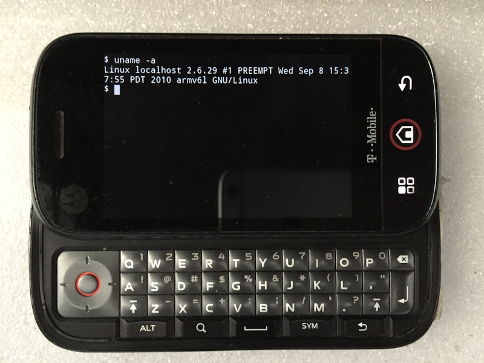

 Linux运行在Motorola CLIQ手机，Android 2.1
Linux对于计算机相关专业的人们很重要。跟兰州拉面一样目前还没有学会做，先简单介绍。
操作系统是系统软件，它管理计算机硬件和软件资源。8位单片机通常很少用操作系统，而32位单片机就有使用操作系统了，如上篇提到的ARM Cortex-M4使用mico，被单片机更广范使用的操作系统有MicroC/OS，VxWork，这类操作系统更注重实时性。对于ARM嵌入式开发，有Linux和Windows CE操作系统。 Windows操作系统为大多数人所知，它主要面向个人计算机。在ATM、收银机以及医院自助机都能看到Windows的踪影，因为平台统一以及为大多数人了解，所以在一般情况下容易维护。Linux往往运行在服务器上。多在电信运营商，数据中心，有的企业、单位或者个人架设服务器。在嵌入式领域也应用很广，PC领域占有量很小。 注：Windows10加入了Linux子系统。 与Windows系统相比，Linux更像兰州拉面，一般拉面馆都是明厨亮灶，顾客可以看到"拉"-面的过程。厨师们也靠着这门手艺让拉面走向了全国各地。据说兰州拉面来自青海省化隆回族自治县。Linux是开源软件的典范，它的源代码是公开的。人们可以学习、审查或者贡献代码。Linux被广泛使用，它支持很多的处理器平台，包括我们知道的x86、ARM还有MIPS、PowerPC、RISC-V等等。
源起 1991年， 芬兰，当时作为赫尔辛基大学学生的Linus Torvalds作为爱好公布了一个操作系统，开始他想以Freax命名（Free+freak），后来听从他人建议命名为Linux。明年就是Linux诞生的30周年了。吉祥物是企鹅。它的出现包括几个因素。Unix奠定了操作系统的基础，所以Linux也被称为类Unix(Unix-like)操作系统。互联网的兴起，为人们提供了交流平台，Linux由许多来自世界各地的人贡献代码，可以说是人类智慧的结晶。PC机的成型，这包括1985年intel推出了32位的x86处理器80386。minix只能用于教学，这让Linus决定开发一个更开放的操作系统。Linux最初是在386机器、minix操作系统上创作的。
发行版 首先Linux作为内核，就要与其他软件合作。它是伴随GNU套件而来，像编译时使用GNU gcc，此外GNU也提供了很多其他命令行工具和库，这也是GNU/Linux的由来。相较Windows操作系统，这些似乎差好多，没有图形化界面等等。有很多组织将这些常用软件整合，做成了发行版。这是多方面的工作。这些很多都是免费的应用，不要进入思维误区。 distrowatch这个网站有Linux发行版信息，各发行版的流行趋势。 对于Linux发行组织，其中一个工作是提供包管理程序，它解决软件依赖关系，提供简单的软件安装、管理方式。由此介绍其中的三类发行版： 发行版 | 包管理工具 | 包文件格式 Debian | ATP | deb Debian 最初发行于1993年，拥有大量的软件包，有很多发行版基于它 Ubuntu 基于Debian衍生版本，在国内有一定热度，以桌面应用为主 Redhat | RPM,yum | rpm Redhat 最初发行于1995年，企业版主要面向服务器、工作站 CentOS 基于Rethat，面向服务器领域 Fedora 由Redhat开放的项目，新技术先会在这里测试，其中有部分会加入Redhat Archlinux | Pacman | pkg.tar.zst Archlinux 最初发行于2002年，仅支持x86-64，轻量级，命令行环境
安装与使用 安装系统，选好发行版，到其官方网站下载，根据网站的提示制作安装盘，一般是系统光盘或者优盘。注意做好电脑、优盘上面资料的备份工作，误操作可能导致硬盘资料丢失、电脑无法启动等后果。电脑启动安装时，在BIOS选择好对应启动项。参看网站相关文档，按安装提示一步步来。 使用的时候要熟悉命令行，记住man命令！man是查看文档的程序，刚接触可以先从man man开始，即查看man命令（自身）的文档。
嵌入式Linux Android是嵌入式Linux的典型，它是基于Linux内核修改的。另外现在很多家用无线路由器、网络机顶盒等也在使用Linux。 上面照片中是使用Android 2.1的Motorola CLIQ手机，运行了“终端模拟器”应用
$uname -a
$Linux localhost 2.6.29 #1 PREEMPT Wed Sep 8 15:37:55 PDT 2010 armv6l GNU/Linux
首行"uname -a"是输入的命令。 "uname"是程序名 "-a"是参数，意思是显示系统的全部信息。 下面一行是执行后返回的结果。 内核名：Linux，网络节点主机名：localhost，内核发行版：Linux 2.6.29，版本：#1 PREEMPT PDT是太平洋夏令时 十年前，硬件：armv6l指令集架构（l:小端序）即上一篇提到的ARM11处理器指令集架构，操作系统：GNU/Linux。 注：目前Linux内核的最新发行版本是5.8 在之前提到过这部手机（Motorola CLIQ）的呼吸灯，那时是用AVR单片机程序来举例。考虑它本身的实现方式，需要对应目标板LED的Linux驱动程序，还有关于LED的Linux/Android应用程序。
最后以《The Matrix》电影话题结尾，直译是“矩阵”，台湾地区作《骇客任务》，大陆翻译为《黑客帝国》。Linux给人的感觉就是这样——Cool Cool的。 这一类的电影较为抽象，会感觉玄乎，想象与现实，虚拟与真实。至少有一点确定，精神失常不一定是坏事。 Matrix digital rain 电影里黑客帝国文字下落，设计师Simon Whiteley, "I like to tell everybody that The Matrix's code is made out of Japanese sushi recipes" 下落的文字是来自他媳妇的日本寿司食谱。 从网上找到了两种方式：gif图片，文件大小约3MB。javascript实现的网页，文件约3KB。javascript实现需要更多的CPU计算时间，gif需要更多的储存空间，时间复杂度与空间复杂度的体现吧。 gif动态图片的文字下落 javascript实现的文字下落 上面javascript实现的网页按格式展开后有约80行代码，下落的是数字和日本文片假名的随机组合。在他的基础上，将《礼记·大学》里的前三段句子拆分成数个小节作为下落内容，并调整理下落形式，就有了《大学》的下落 注：用编辑器打开html文件，或者浏览器里右键选择查看网页源码(chrome:ctrl+U)。 电影毕竟是电影，今年在火车站台听到大概这样的话，“现在人们吃的穿的比以前好多了，没有那会儿的人有精神。” 想一下，确实是这样。
{kind=link}